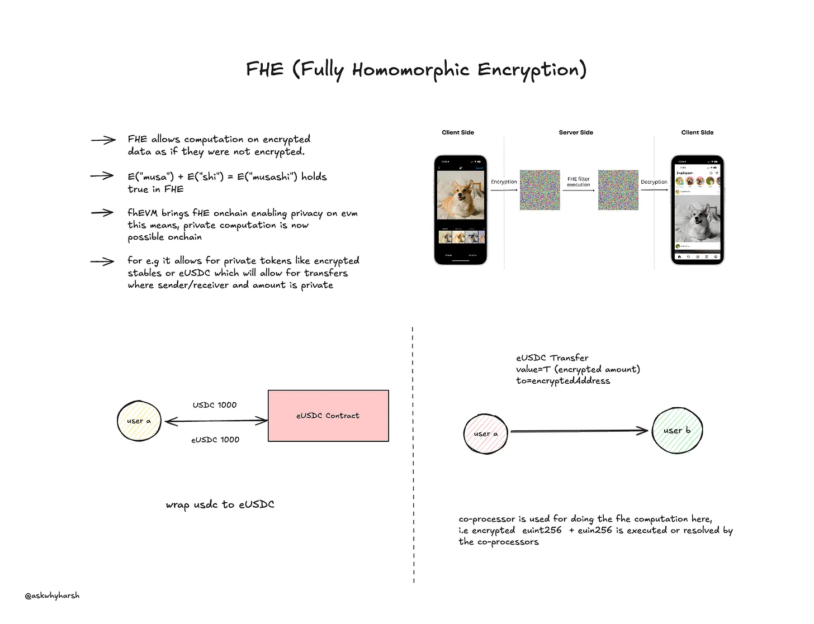

I met Rishab, co-founder of Encifher, at an event last week, which led me to discover FHE, fhEVM, and more. This discovery inspired me to write this blog post.
Encryption has been at the heart of secure communication for a very long time. One of the foundational systems, RSA (Rivest-Shamir-Adleman), introduced the concept of a Public-Private key pair, which you probably have used to connect your GitHub account to your laptop so that you can securely access it with SSH, and probably also use it to SSH into your AWS EC2 instance running on free AWS credits.
Here's how RSA works:
Key Generation: RSA relies on two large prime numbers, p and q. Their product, n = p × q, forms part of the public key, along with an exponent e. The private key is derived from p, q, and a private exponent d.
Encryption: A sender uses the recipient's public key to compute the ciphertext c using the formula c ≡ me mod n.
Decryption: During decryption, the recipient uses their private key d to recover the original message through the computation m ≡ cd mod n. This decryption works because of Euler's theorem.
RSA ensures confidentiality because only the private key can decrypt the message encrypted by the public key. The security of RSA is founded on the computational difficulty of factoring the product of two large prime numbers, known as the factoring problem, making it impractical to derive the private key from publicly available information.
FHE is a form of encryption that allows computations to be performed directly on encrypted data without decrypting it. The result of the computation is still encrypted, but when decrypted, it matches the result as if the computation was performed on the plaintext. When I read about FHE for the first time last week, I was amazed.
Encryption: Let's say some data m is encrypted using a public key, producing ciphertext c. Now here comes the interesting part.
Computation: In FHE, operations like addition and multiplication are performed directly on c. For example, given c1 = E(m1) and c2 = E(m2), c1 + c2 decrypts to m1 + m2, and c1 × c2 decrypts to m1 × m2.
Decryption: The result of the computation, still encrypted, is decrypted using the private key.
FHE relies on complex mathematical structures like lattices, which I don't yet know much about (gotta do more math). FHE traces back to groundbreaking work by Craig Gentry in 2009. Gentry's scheme laid the foundation for further innovations. If you want to know more, go ask GPT.
FHE has a bunch of use cases for privacy in public blockchains because it enables the processing of sensitive data without exposing it to intermediaries or validators. Some key use cases:
Private Transactions: FHE can ensure transaction amounts and account balances remain encrypted while allowing validators to verify the correctness of the transaction. This is an under-development use case that I found a few projects working on, Encifher being one. I met their founder at an event last week, which led me to discover FHE and then write this blog. I know nothing, I just Google, GPT, and copy-paste everything here for no reason.
Privacy-Preserving Smart Contracts: Smart contracts can operate on encrypted inputs, making confidential computations possible while maintaining privacy of selected data. I went ahead to try one of the use cases built on this—private voting using FHE—and interestingly, it worked.
For those interested in diving deeper, this introductory resource on FHE provides good resources.
The concept of fhEVM (Fully Homomorphic Encryption Virtual Machine) bridges FHE with Ethereum's EVM. The goal is to bring encrypted computations to the Ethereum ecosystem.
Encrypted Inputs: Users encrypt inputs before sending them to the blockchain.
Encrypted Execution: The fhEVM executes smart contract logic on encrypted data.
Encrypted Outputs: Outputs remain encrypted until the user decrypts them locally.
This reduces the need for trusted execution environments (TEEs) or ZK circuits for privacy. I think it's quite fitting technology for applications like private DeFi (e.g., confidential swaps and lending).
For an in-depth look at fhEVM's potential, check out the work by Zama.ai.
Machine learning (ML) models are often limited in privacy-sensitive applications because training and inference require plaintext data. FHE enables ML models to operate on encrypted data. This is just one of the many ways ML models can verify or attest to the computation that they do, but better since this assumes the models are faulty and therefore gives them encrypted data instead. However, this comes with the cost of the computation being slow.
Zama.ai has developed a tool, Concrete ML, which uses FHE to bring privacy-preserving capabilities to ML workflows. Here's how it works:
Encryption: Data is encrypted before being fed into the ML model.
Inference: The model processes the encrypted data, performing operations like matrix multiplication without decrypting it.
Decryption: The encrypted output is decrypted to reveal the result.
Imagine a scenario where a financial institution (yeah, where those men in suits work) evaluates creditworthiness without accessing plaintext user data. The input (e.g., income, credit history) is encrypted and processed by the code securely, ensuring user privacy while delivering accurate results.
I went ahead to code this myself and try it out. Here's the code in Rust that uses Zama's tfhe crate to perform a basic credit score calculation from two inputs, encrypt it, do the calculation, and decrypt it later. You know what happened? It worked.
use tfhe::prelude::*;
use tfhe::{generate_keys, set_server_key, ConfigBuilder, FheUint8};
fn main() {
let config = ConfigBuilder::all_disabled()
.enable_default_uint8()
.build();
let (client_key, server_key) = generate_keys(config);
// Encrypt inputs
let income = FheUint8::encrypt(75u8, &client_key);
let credit_history = FheUint8::encrypt(80u8, &client_key);
// Set server key for computation
set_server_key(server_key);
// Perform computation on encrypted data
let credit_score = &income + &credit_history;
// Decrypt result
let result: u8 = credit_score.decrypt(&client_key);
println!("Credit Score: {}", result);
}
But it took some 5-6 seconds just to do this much calculation with --release. Without that, it wasn't working at all on my PC.
FHE is an exciting technology with immense potential for privacy-preserving applications, especially in blockchain and machine learning. While it's still in its early stages and comes with performance overhead, the future looks quite promising as the technology matures.